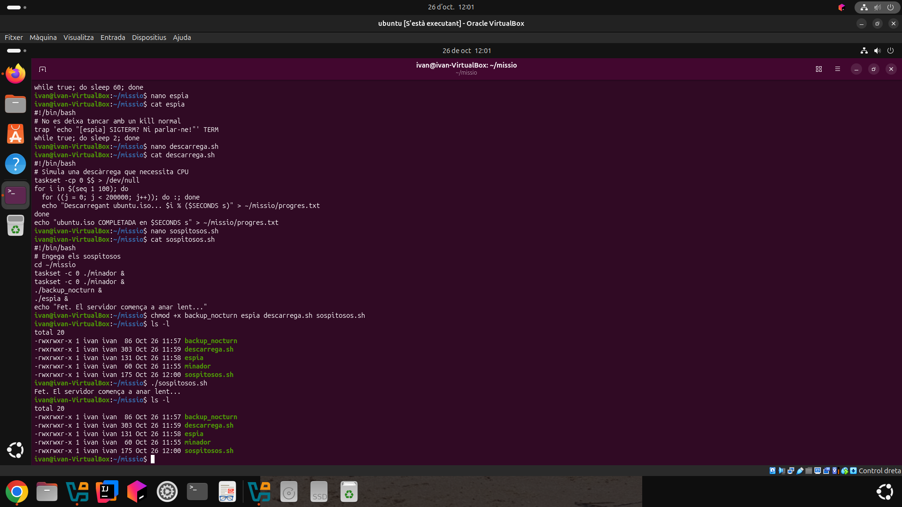
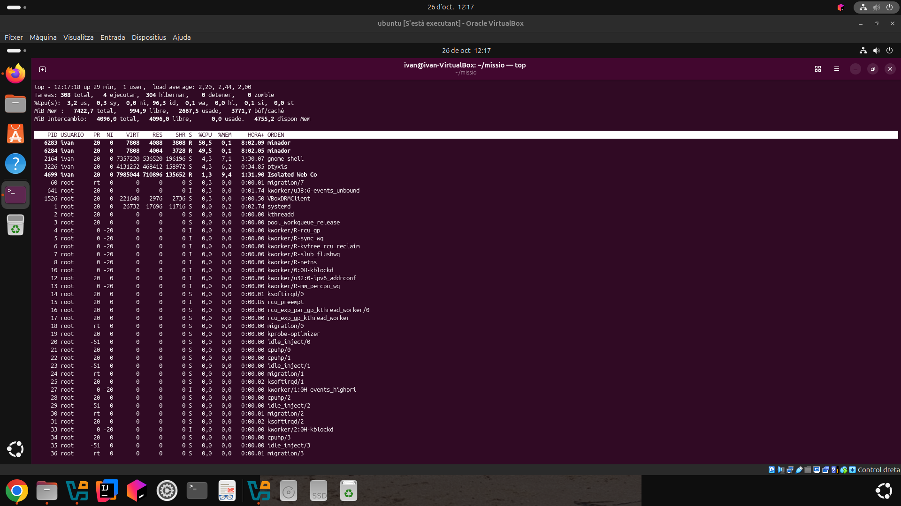
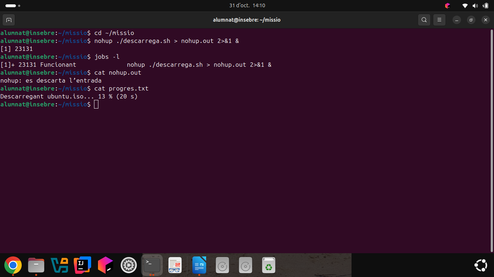

1. Gestió de processos
En aquesta pràctica he treballat la gestió de processos en un sistema operatiu Ubuntu. L'objectiu era investigar per què un servidor funcionava lentament, identificar processos sospitosos i aprendre a controlar-los. en Ubuntu. L'objectiu era investigar per què un servidor funcionava lentament, identificar els processos sospitosos i aprendre a controlar-los.
He utilitzat comandes com ps, top, pgrep, pstree, jobs, bg, fg, renice, kill i nohup. He utilitzat les comandes ps, top, pgrep, pstree, jobs, bg, fg, renice, kill i nohup.
1.1. Preparació de l'entorn
Primer he creat una carpeta anomenada
missio, on he guardat els scripts
missio per guardar els scripts
necessaris per simular el problema del servidor.
mkdir ~/missio
cd ~/missio
He creat els scripts
minador,
espia,
backup_nocturn,
He creat els scripts minador,
espia, backup_nocturn,
descarrega.sh i
sospitosos.sh.
El minador consumeix CPU, l'espia ignora el senyal SIGTERM, el backup simula una còpia de seguretat i la descàrrega simula una tasca important. Els minadors consumeixen CPU, l'espia ignora el senyal SIGTERM, el backup simula una còpia de seguretat i la descàrrega simula una tasca que necessita recursos.
Després he donat permisos d'execució als scripts i he executat el fitxer que inicia els processos. i he iniciat els processos sospitosos.
chmod +x minador espia backup_nocturn descarrega.sh sospitosos.sh
./sospitosos.sh
ls -l

1.2. Reconeixement dels processos
He utilitzat pstree per veure els
processos en forma d'arbre i comprovar quins
processos depenien d'altres.
He utilitzat pstree per veure
els processos en forma d'arbre i identificar
la relació entre processos pare i fill.
pstree -p $USEREn aquestes captures es poden veure els processos de la missió, com els dos minadors, l'espia i el backup, juntament amb els seus identificadors PID. A les captures es poden veure els dos minadors, l'espia i el backup, amb els seus identificadors PID. L'arbre de processos és molt extens, per això he fet dues captures.


1.3. Anàlisi del consum de recursos
He executat top per observar
He utilitzat top per observar
el consum de CPU i memòria en temps real.
1.3. Anàlisi del consum de recursos
per què el servidor anava lent.

1.4. Investigació amb PS i PGREP
He utilitzat les comandes ps i
pgrep per identificar els processos
pgrep per localitzar els processos
sospitosos i consultar les seves dades.
1.4. Investigació amb PS i PGREP
ps -o pid,ppid,user,stat,etime,%cpu,comm -C minador,espia,backup_nocturnHe pogut identificar el PID, el PPID, l'usuari, He identificat el PID, el PPID, l'usuari, l'estat, el temps d'execució i el percentatge de CPU de cada procés.
També he comprovat que els processos de la missió
tenien com a procés pare el systemd
de l'usuari.
També he comprovat que els processos
de la missió tenien com a pare el
systemd de l'usuari.


1.5. Control de processos en segon pla
He executat l'script descarrega.sh,
que simula la descàrrega d'un fitxer ISO d'Ubuntu.
He executat descarrega.sh,
un script que simula la descàrrega d'una
imatge ISO d'Ubuntu.
En un altre terminal he utilitzat
watch per observar el progrés
watch per consultar el progrés
de la descàrrega.
./descarrega.sh
watch -n 1 cat progres.txt
He aturat la descàrrega amb
Ctrl+Z, he consultat
el treball amb jobs -l
i l'he reprès en segon pla amb
bg %1.
He aturat el procés amb Ctrl+Z,
he consultat el seu estat amb jobs -l
i l'he reprès en segon pla amb bg.
jobs -l
bg %1
fg %1Finalment, he tornat a deixar el procés Finalment, he tornat a deixar la descàrrega en segon pla i he comprovat que continuava funcionant mentre el terminal estava lliure.

1.6. Modificació de prioritats amb RENICE
He utilitzat renice per donar
més prioritat a la descàrrega i reduir
la competència pels recursos de CPU.
He utilitzat renice per augmentar
la prioritat de la descàrrega i afavorir
que rebés més temps de CPU.
sudo renice -n -10 -p PID_DESCARREGA
Després he observat els processos amb
top i he comprovat que
la descàrrega tenia un valor NI de
-10 i consumia
aproximadament un 81 % de CPU,
mentre que els minadors consumien
al voltant d'un 8 % cadascun.
top i he comprovat que la
descàrrega tenia un valor NI de
-10 i consumia aproximadament
un 81 % de CPU.
Això demostra com la prioritat pot influir en el repartiment dels recursos. Els dos minadors consumien aproximadament un 8 % cadascun, de manera que la descàrrega tenia més recursos disponibles.


1.7. Control de processos amb senyals
@@ -261,8 +262,8 @@
1.7. Control de processos amb senyals
pkill -KILL -x espia
Finalment, he aturat temporalment
el procés backup_nocturn
Finalment, he aturat temporalment el
procés backup_nocturn
amb SIGSTOP i l'he reprès amb SIGCONT.
1.7. Control de processos amb senyals
a l'estat S (dormint).

1.8. Execució persistent amb NOHUP
En l'última part he iniciat una descàrrega
amb nohup perquè el procés
pogués continuar funcionant sense dependre
del terminal.
amb nohup per evitar que
depengués de mantenir el terminal obert.
nohup ./descarrega.sh > nohup.out 2>&1 &
He comprovat que la descàrrega estava
funcionant en segon pla amb
jobs -l i he consultat
el fitxer de sortida i el progrés.
He comprovat que el procés estava funcionant
en segon pla amb jobs -l
i he consultat el fitxer de sortida
i el progrés de la descàrrega.
jobs -l
cat nohup.out
cat progres.txt
A la captura es veu que el procés s'ha
iniciat correctament amb
nohup i que la descàrrega
ja havia arribat al 13 %.
A la captura es veu que la descàrrega
s'ha iniciat correctament amb
nohup i que ja havia
arribat al 13 %.


1.9. Conclusions
Amb aquesta pràctica he après a identificar i analitzar processos de Linux, comprovar el consum de CPU i memòria i investigar els processos que poden alentir un sistema. els processos que poden alentir un servidor.
@@ -331,8 +332,8 @@
1.9. Conclusions
Aquesta activitat m'ha ajudat a comprendre millor com es gestionen els processos en un servidor Ubuntu. millor com funciona la gestió de processos en un sistema Ubuntu.